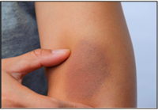

Médecin traitant
 URGENCE
Les hématomes sont des lésions bleutées et gonflées. Lorsque la paupière est touchée, c’est l'œil au beurre noir. L’hématome de l’oreille se traduit par une oreille en chou-fleur. Lorsque l’hématome se situe sous un ongle, celui-ci est bleu et très sensible à la pression. Une ecchymose provoque une tache bleu violacé qui vire au jaune ou au verdâtre. Si les bleus surviennent sans raison apparente, consultez rapidement votre médecin, en particulier.
Déconnexion